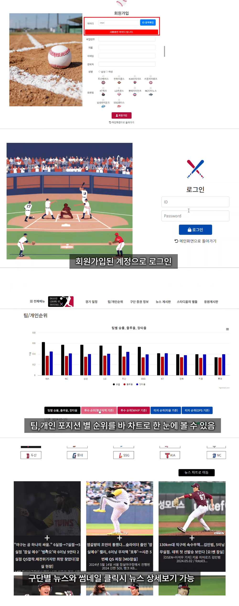
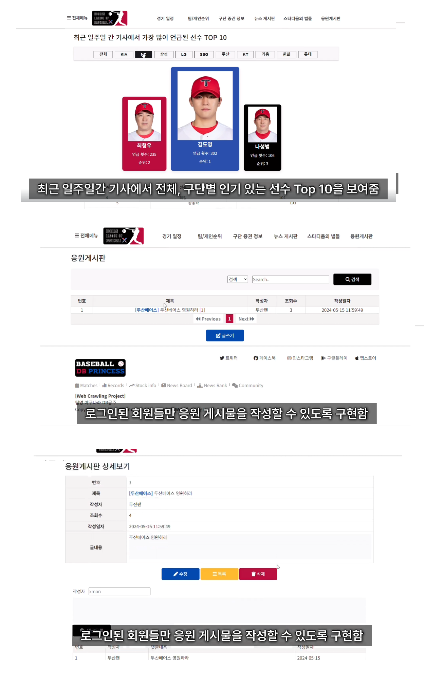
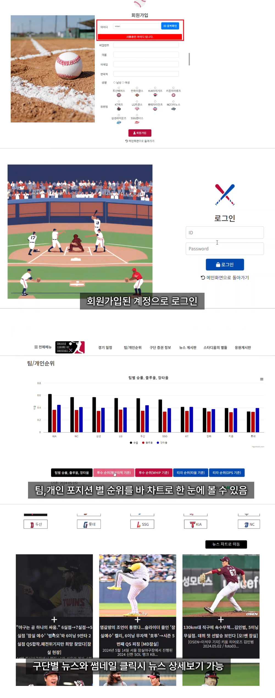
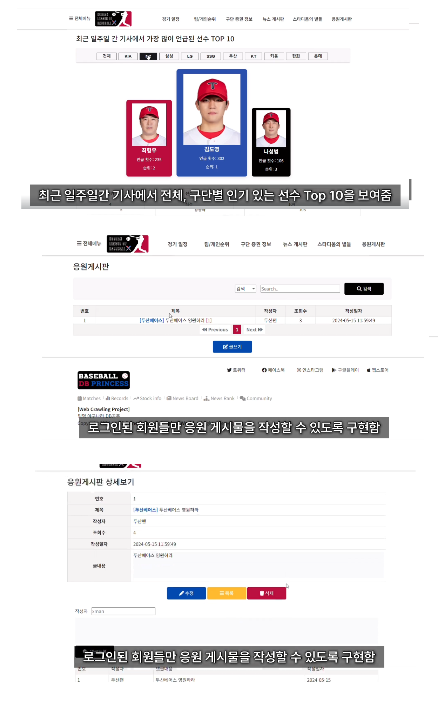

향후 개선 방향
- 경기 흐름 예측 모델 도입으로 인사이트 제공 확대
- 타자·투수 심화 지표 및 비교 대시보드 고도화
- 공식 데이터와의 정합성 검증 및 품질 지표 공개
- 모바일 사용성을 고려한 경량 UI/필터링 개선
 KBO 메인 화면
KBO 메인 화면
Project
흩어진 KBO 리그 정보를 한곳에 모아 경기 데이터, 뉴스, 구단 정보,
커뮤니티를 빠르게 탐색할 수 있는
통합형 야구 정보 플랫폼을 구축했습니다.
실시간 경기/선수 데이터를 모아 핵심 지표를 한 화면에 제공
야구장 위치 기반 날씨 정보와 매칭해 경기 몰입도 강화
최신 KBO 뉴스를 자동 수집해 피드 형태로 업데이트
모기업 증권 정보를 차트/지표로 시각화해 비교 가능
응원 게시판, 댓글, 필터링/신고로 사용자 참여 유도
크롤러 개발 및 구조 변경 대응 로직 구현
Django/Spring MVC 이기종 백엔드 통신 설계
크롤링 스케줄러 및 오류 감지로 데이터 품질 확보
Highcharts 대시보드 구성 및 인터랙션 최적화
응원 커뮤니티 기획 및 UI/UX 설계
 


